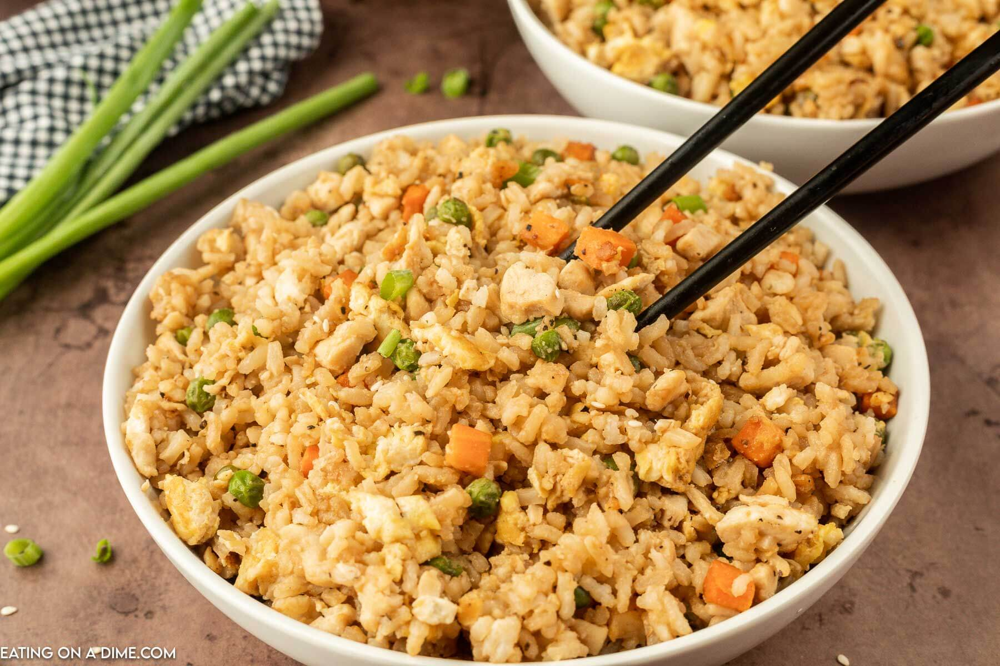

Chicken Fried Rice

Description:
Fried rice is a dish of cooked rice that has been stir-fried in a wok or a
frying pan and is usually mixed with other ingredients such as eggs,
vegetables, seafood, or meat. It is often eaten by itself or as an
accompaniment to another dish. Fried rice is a popular component of East
Asian, Southeast Asian and certain South Asian cuisines, as well as a
staple national dish of Indonesia. As a homemade dish, fried rice is
typically made with ingredients left over from other dishes, leading to
countless variations. Fried rice first developed during the Sui Dynasty in
China.
Ingredients:
- 1 Cup rice
- 1 tbsp salt
- oil
- 2 tsp garlic paste
- 1 cup spring onions, finely chopped
- 3/4 cup chicken (cooked), finely chopped
- 2 tbsp celery , finely chopped
- 2 tsp soya sauce
- 1 tbsp vinegar
- 1 tsp chilli sauce
Steps:
- Boil the rice with 1 tsp salt and 1 Tbsp oil, till 'bite-like'.
- Drain and rinse under cold water.
- Leave in the colander and work 1 Tbsp oil into it.
- Heat the rest of the oil and saute the garlic and onions, till onions are a light brown.
- Add the chicken and stir-fry till well mixed.
- Add the soya sauce, vinegar and chilli sauce, mix well and add the rice.
- Stir till rice and chicken are well mixed and serve.